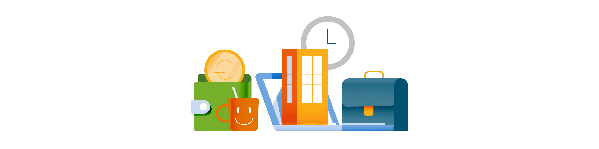

Bel ons
Bel ons  Bericht
Bericht
 Bijzonderebijstand
Bijzonderebijstand
 Denk vooruit
Denk vooruit
 Formulier
Formulier
 Gezondheid
Gezondheid
 Intimidatie
Intimidatie
 Levensloop
Levensloop
 Plattegrond
Plattegrond
 Recycle
Recycle
 Rekenhulp
Rekenhulp
 Schuldhulpverlening
Schuldhulpverlening
 Uitbuiting
Uitbuiting
 Vragen
Vragen
 Weerbaarheid
Weerbaarheid
Rechtenvrije illustraties

Illustraties zorgen voor aantrekkelijke en toegankelijke overheidscommunicatie.
Bekijk de illustraties
Ontwikkeled door OpenGemeenten. Bedoeld voor toptaken, formulieren en navigatie op overheidssites — in vier varianten zodat het altijd past bij jouw ontwerp.
Iconen
4Varianten
SVGVector formaat
CC0Publiek domein
Ontwikkelaars kunnen iconen rechtstreeks uit de repository laden, waardoor de set altijd actueel blijft op websites.
Bekijk de repository
Onder leiding van Frameless zijn er van de regular iconen webcomponenten gemaakt, waardoor deze eenvoudig te gebruiken zijn in Common Ground-projecten.
Bekijk de documentatie
Liever alles in één keer binnenhalen? Download de complete set als ZIP-bestand.
Download de complete set
Illustraties zorgen voor aantrekkelijke en toegankelijke overheidscommunicatie.
Bekijk de illustraties